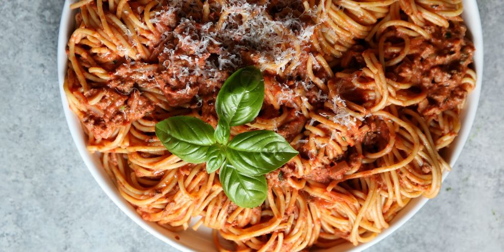

Lemon Squares

Serve hot with a side of baguette for a tradition flavor.
Serves 6-8 people.
Ingredients
- 1 pound ground beef
- 1 onion, chopped
- 4 cloves garlic, minced
- 1 small green bell pepper, diced
- 1 (28 ounce) can diced tomatoes
- 1 (16 ounce) can tomato sauce
- 1 (6 ounce) can tomato paste
- 2 teaspoons dried oregano
- 2 teaspoons dried basil
- 1 teaspoon salt
- 1/2 teaspoon black pepper
Instructions
- Combine ground beef, onion, garlic, and green pepper in a large saucepan. Cook and stir until meat is brown and vegetables are tender. Drain grease.
- Stir diced tomatoes, tomato sauce, and tomato paste into the pan. Season with oregano, basil, salt, and pepper. Simmer spaghetti sauce for 1 hour, stirring occasionally.